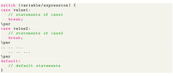
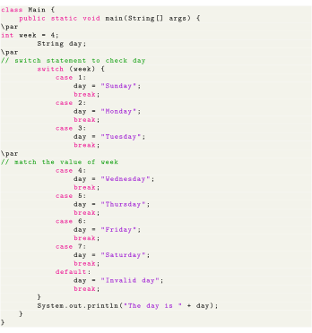
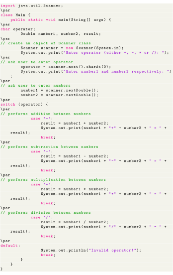

Next: Java for Loop Up: Control Flow and Decision Previous: When to use ternary Contents
In Java, if..else..if ladder is used to execute a block of code among multiple blocks. However, the syntax of if...else...if ladders are too long. Hence, we can use the switch statement as a substitute for long if...else...if ladders. The use of switch statements makes our code more readable.

The switch statement evaluates the expression (mostly variable) and compares it with values (can be expressions) of each case label. Now, if the value matches a certain case label, then all the statements of the matching case label are executed. For example, if the variable/expression is equal to value2. In this case, all statements of that matching case (statements of case2) are executed. Notice, the use of break statements in each case. The break statement is used to terminate the execution of the switch statement. It is important because if break is not used all the statements after the matching case are executed in sequence until the end of the switch statement.
The Java switch statement only works with:

The output for the above code is The day is Wednesday. In the above example, we have used the switch statement to find out the day of a week. Here, we have a variable week that holds an integer value. The value is compared to each case inside the switch block. Here the value of week is 4. Hence it matches the case 4. So the statement inside case 4 is executed.
Exercise
Make Calculator using the switch statement.

Output is as follows:
